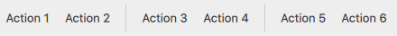

Separator Controls
Qt Quick Controls offers a selection of separators.
Separates a group of items in a menu from adjacent items | |
Separates a group of items in a toolbar from adjacent items |
Each type of separator has its own specific use case. The following sections offer guidelines for choosing the appropriate type of separator, depending on the use case.
MenuSeparator Control

MenuSeparator should be used to separate items (typically MenuItem controls) in a Menu. Grouping related menu items together makes it easier for the user to interact with the menu. For example, a typical desktop user interface might have Undo and Redo items in one group, and Cut, Copy and Paste in another.
ToolSeparator Control

ToolSeparator should be used to separate items (typically ToolButton controls) in a ToolBar. It can be used in horizontal or vertical toolbars.